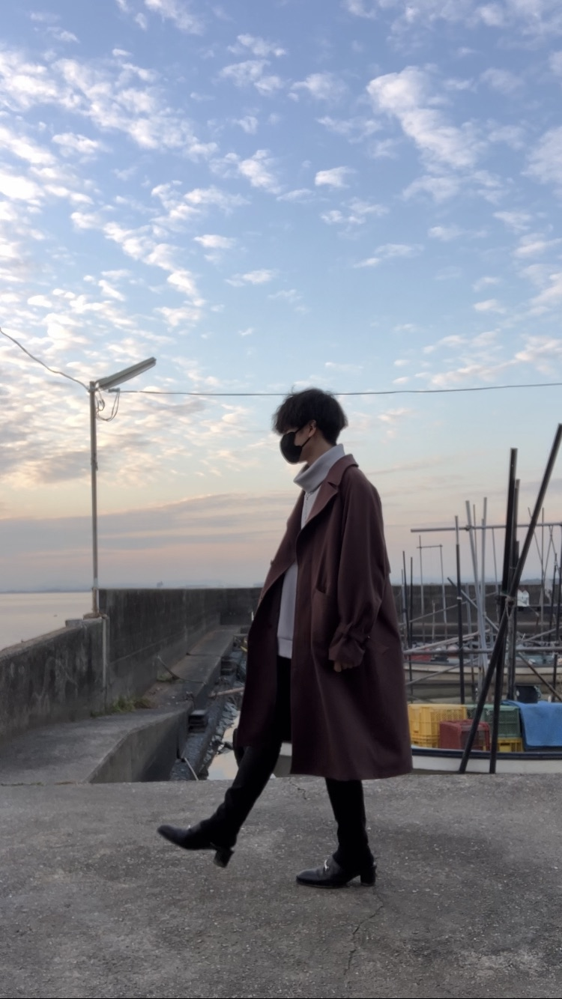

About Chiwa
プロフィール

A little about me
Chiwa
絵を描くことが好きで、イラスト制作を続けてきました。
その経験をWebのデザインにも活かし、色や形だけでなく、
作品やサービスの魅力がきちんと伝わる見せ方を考えています。
制作では、最初に目的やイメージを丁寧に伺うことを大切にしています。
ひとつずつ確認しながら、見た目と使いやすさの両面から
ご希望に合う形を一緒につくっていきます。
Tools & skills
制作に使うツール
- Figma画面デザイン
- Photoshop画像編集
- Illustratorグラフィック
- Clip Studio Paintイラスト制作
- HTML / CSSWebページ制作
- JavaScript基本的な動き